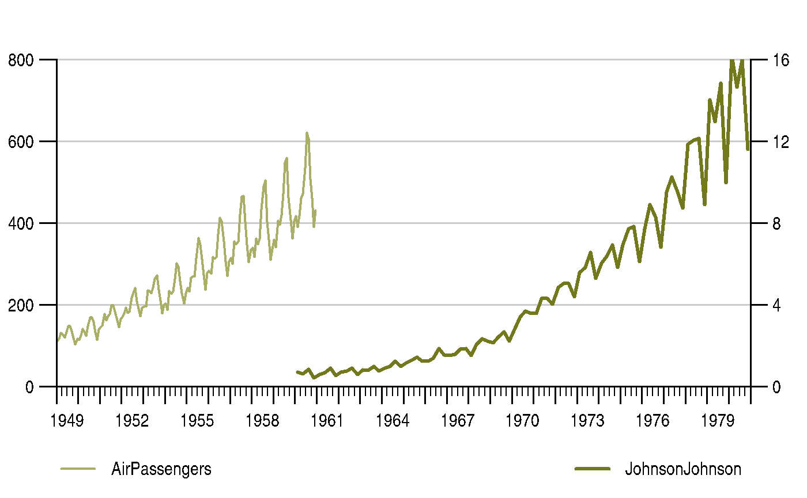

vignettes/get_started.Rmd
get_started.RmdThis guide assumes you have installed the {timeseriesdb} R package and a local PostgreSQL client library successfully. We also assume that you have a PostgreSQL database running somewhere that you can connect to.
For the remainder of this guide we assume PostgreSQL runs on a local docker container accessible on port 1111.
Let’s take two time series from the {datasets} R package that ships with R (monthly AirPassengers, JohnsonJohnson quarterly earnings per share) and put them in to a named list. The {timeseriesdb} R package uses lists of time series or long format time series data.tables to stage time series for storing in PostgreSQL.
## Loading timeseriesdb#library(timeseriesdb)
con <- dbConnect(RPostgres::Postgres(),
dbname = "postgres",
user = "dev_admin",
host = "localhost",
password = "dev_admin",
port = 1111)
tsl <- list(AirPassengers = AirPassengers,
JohnsonJohnson = JohnsonJohnson)
store_time_series(con, tsl, "main")## $status
## [1] "ok"
##
## $reason
## [1] "the world is full of rainbows"## Loading required package: zoo##
## Attaching package: 'zoo'## The following objects are masked from 'package:base':
##
## as.Date, as.Date.numeric
{timeseriesdb} keeps track of different versions of a time series. This feature was designed with regular releases of data in mind. In official and economic statistics, releases do not simply mean to append another observation at end of time series. Seasonal adjustment and other filters as well data corrections cause revisions of a time series. In order to keep research, e.g., forecasts reproducible, it is important to archive all versions of a time series. Doing so, allows to assess forecast performance and makes sure the state of information at the time the forecast was made can be reproduced.
{timeseriesdb} allows to store one version of a time series per day, i.e., series
In {timeseriesdb} every time series belongs to a dataset. If no dataset is specified when a time series is stored, the series automagically gets assigned to the default dataset.
The idea behind datasets is to group time series according to their source and allow for group level data description. The following helpers help you to explore which keys are in a given set and which keys are in which set.
## [1] "AirPassengers" "JohnsonJohnson"## ts_key set_id
## 1 AirPassengers default
## 2 JohnsonJohnson defaultYou can easily add new datasets. Note though, that dataset are not user specific, but global groups. The user specific analog to sets is called collection in will be described later on.
## [1] "stocks"Once a set is created you can move existing series to that set.
## $status
## [1] "ok"## ts_key set_id
## 1 AirPassengers default
## 2 JohnsonJohnson stocks